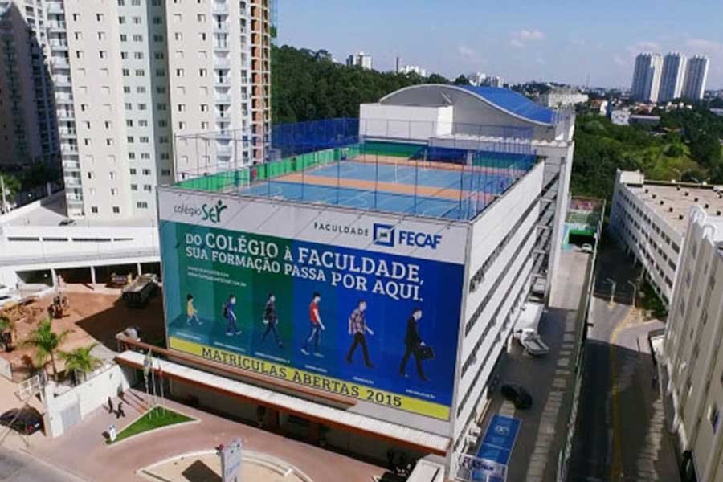
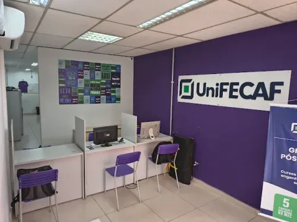
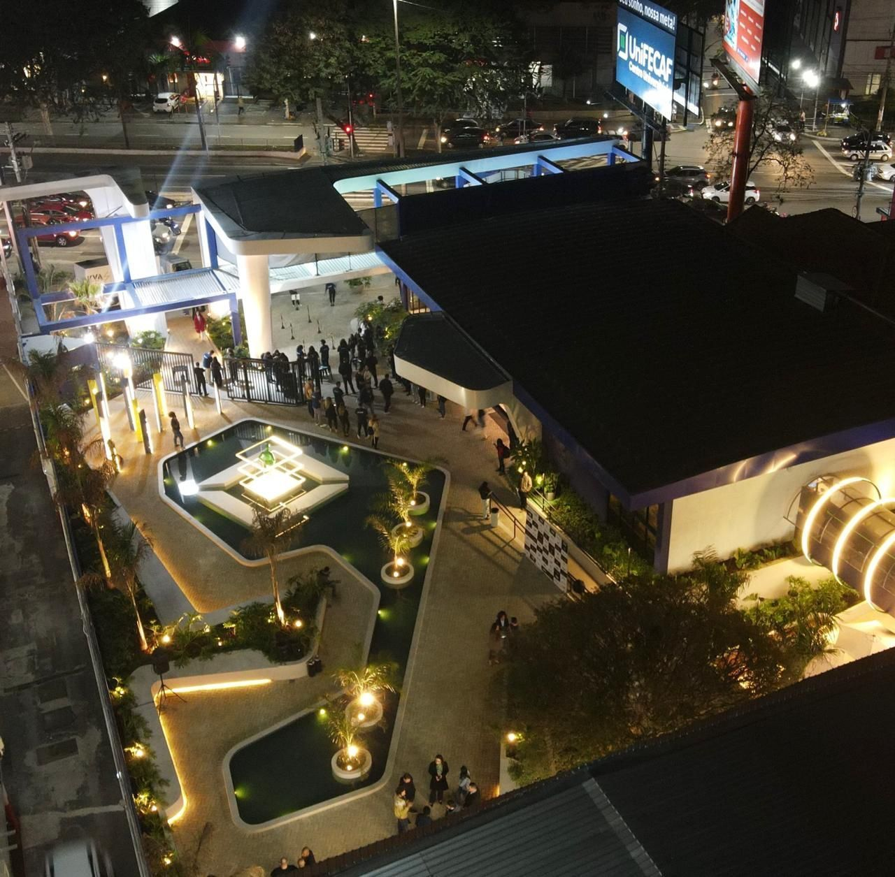
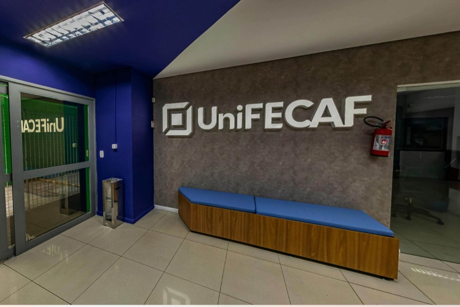

Sobre Nossa Biblioteca
Seja bem-vindo à Biblioteca UniFECAF! O coração acadêmico da nossa instituição foi projetado para impulsionar a sua jornada de conhecimento, oferecendo suporte educacional completo tanto para os estudantes presenciais no campus sede em Taboão da Serra quanto para a nossa comunidade de ensino a distância (EAD) espalhada por todo o país. Nosso espaço físico foi planejado para incentivar a pesquisa e o aprendizado contínuo, contando com salas de estudo individual ou em grupo, um balcão de atendimento humanizado e um acervo físico com milhares de volumes atualizados. Tudo isso com a praticidade de um sistema integrado de empréstimos e canais de suporte online via WhatsApp para você tirar dúvidas e estender prazos de devolução rapidamente.

Para quem busca flexibilidade, o nosso ecossistema digital quebra as barreiras geográficas ao disponibilizar mais de 50 mil títulos acessíveis de qualquer dispositivo, 24 horas por dia. Integrada diretamente ao seu portal do aluno, a Biblioteca Virtual UniFECAF unifica acervos das maiores plataformas educacionais do país — como a Biblioteca Pearson, Grupo A e Multiacervo —, garantindo livros didáticos, periódicos científicos e bibliografias complementares na íntegra. Seja estudando nas nossas instalações ou no conforto da sua casa, garantimos que a infraestrutura bibliográfica necessária para o seu sucesso na graduação ou pós-graduação estará sempre na palma da sua mão.




Nossos Livros
HTML e CSS: Projete e Construa Websites

Estudo introdutório teórico-prático sobre estruturação de conteúdo e estilização visual para desenvolvimento de interfaces web.
Learning Web Design

Manual didático abrangente voltado à capacitação de iniciantes nas linguagens de marcação, folhas de estilo e lógica básica.
CSS Secrets

Compilado técnico de soluções avançadas, otimizações de código e boas práticas aplicadas ao design de interface.
HTML5 and CSS3 All-in-One For Dummies

Guia de referência enciclopédico sobre os padrões de arquitetura web contemporâneos e integração de recursos multimídia.
Responsive Web Design with HTML5 and CSS

Tratado focado em metodologias de design fluido, adaptabilidade de displays e técnicas modernas de grid layout.
Designing with Web Standards

Análise histórica e normativa sobre a padronização internacional de códigos, usabilidade, acessibilidade e semântica na rede.
As Unidades

Campus Sede (Taboão da Serra)
O nosso Campus Sede, localizado no coração de Taboão da Serra, na Avenida Vida Nova, 166, é a máxima expressão do conceito Edutainment (educação com entretenimento). Com infraestrutura moderna avaliada com nota máxima pelo MEC, esta unidade presencial oferece aos estudantes salas criativas, laboratórios de última geração voltados à saúde, tecnologia e exatas, além de estúdios de podcast e espaços de convivência inovadores, que incluem até pista de boliche e estúdio de tatuagem. É o local ideal para quem deseja viver uma experiência universitária vibrante, completa e focada em alta empregabilidade.

Campus Centro (Taboão da Serra)
Expandindo nossa presença física na região, o Campus Centro consolida o nosso compromisso com o aprendizado prático em um ambiente disruptivo localizado na Rodovia Régis Bittencourt, 157. Este novo campus conceito dispõe de mais de 20 salas de aula climatizadas e 4 laboratórios integrados de informática, além de integrar o lazer diretamente à rotina dos alunos por meio de áreas abertas ao público, barbearia e salas temáticas. O ambiente perfeito para quem busca conciliar conexões de mercado reais e uma rotina dinâmica de estudos.

Polo Osasco Centro
Para quem reside ou trabalha na região oeste metropolitana, o Polo Osasco Centro oferece o ponto de apoio ideal para cursos nas modalidades EAD e Semipresencial. Situado em localização privilegiada na Rua Minas Bogasian, 125, nossa unidade descentralizada replica o padrão de excelência de nossa sede, entregando laboratórios para atividades práticas, ambientes altamente instragramáveis de interação e uma equipe de atendimento dedicada a fornecer todo o suporte acadêmico e de tutoria necessários para você decolar na carreira profissional.
Contatos

Falar com a UniFECAF é simples, rápido e totalmente digital! Para quem busca atendimento imediato, o canal oficial via WhatsApp (+55 11 4210-4950) é a forma mais prática de tirar dúvidas sobre cursos, inscrições, enviar documentos ou solicitar suporte acadêmico de segunda a sexta-feira. Além disso, se você preferir uma interação direta, nossa equipe de atendimento telefônico está pronta para ajudar, garantindo que você receba uma orientação personalizada e humanizada, seja você um futuro estudante ou um aluno veterano.
Para quem valoriza o contato presencial ou quer conhecer de perto nossa infraestrutura com nota máxima no MEC, as portas dos nossos campi em Taboão da Serra (Campus Sede e Campus Centro) e do Polo Osasco estão sempre abertas para visitas guiadas. Você também pode interagir conosco e acompanhar todas as novidades, eventos e vestibulares através do nosso site oficial e das nossas redes sociais ativas. Independentemente do canal escolhido, a UniFECAF garante uma comunicação sem burocracia para conectar você ao seu futuro profissional o mais rápido possível.